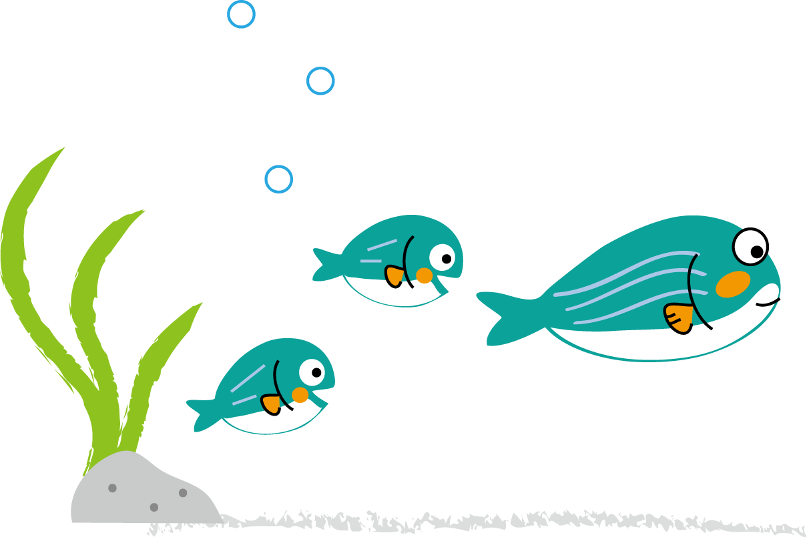
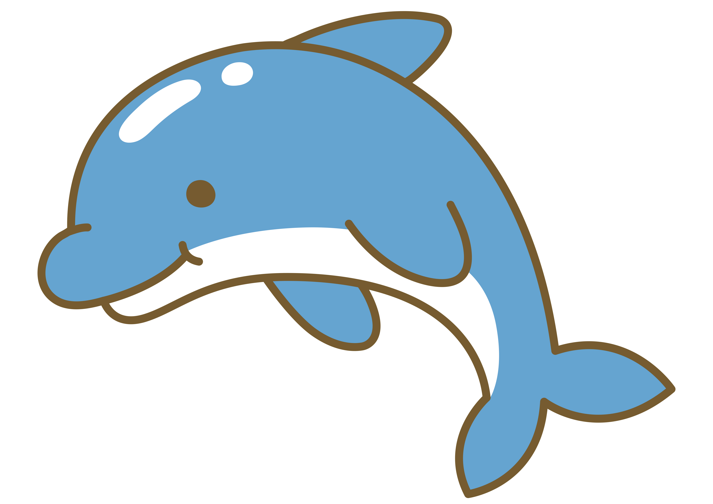

Nすいぞくかんってなあに？

N水族館は、VR・AR・プロジェクションマッピング・モーションキャプチャーなどの新しい技術を取り入れ、ネットとリアルを合わせた近未来の水族館です。
VR HMDをかぶってうみのなかへ
 VR HMD（ヘッドマウントディスプレイ）をかぶると、大きな水そうのど真ん中にいるかのようになるよ。モーションキャプチャーというものによってお客さんの動きを読みとり、大きな水そうの中を自由に動き回ることができる。また、時間によっては魚たちに餌づけ体験ができたり、客同士でゲームをするのも楽しいよ。
VR HMD（ヘッドマウントディスプレイ）をかぶると、大きな水そうのど真ん中にいるかのようになるよ。モーションキャプチャーというものによってお客さんの動きを読みとり、大きな水そうの中を自由に動き回ることができる。また、時間によっては魚たちに餌づけ体験ができたり、客同士でゲームをするのも楽しいよ。
バーチャルキャストによるイルカのショー
イルカのショーには、人間ではなくN水族館オリジナルのバーチャルキャストが登場します。また、きみのスマートフォンからコメントやアクションを送ると、リアルタイムで演出に反映され、きみが送ったことがつながってイルカショーを楽しめるよ。音楽や照明などの演出は毎回ランダムに作られるから、いつも違う演出になってるよ。